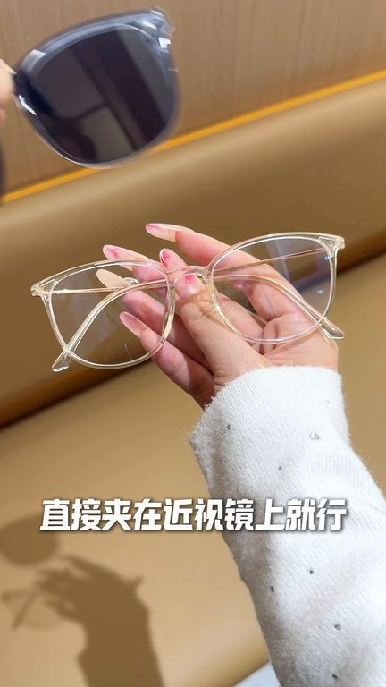
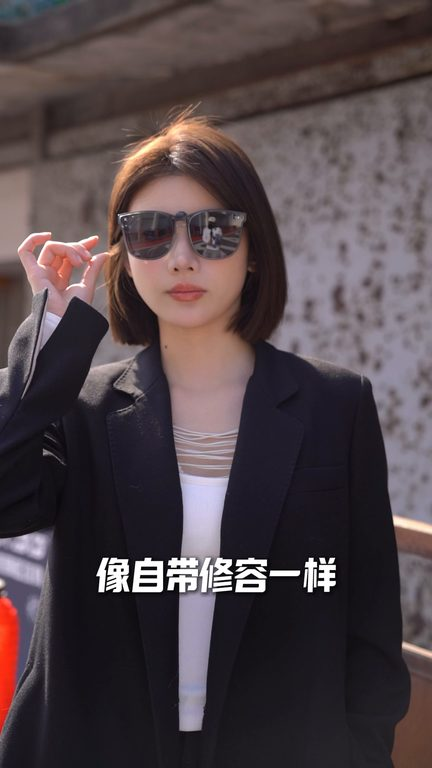

TOP 1 · 代表素材深度拆解
核心放量 点击承压
视频为原始素材 HTTPS 链接；点击后加载，建议在网络环境良好时播放。
18.6万素材消耗
1.26%CTR
17.8%类目消耗占比
-1.40pp较类目均值
表现判断
该素材是类目内第 1 名，属于“核心放量”；CTR 低于类目均值。消耗体现承接规模，CTR 体现首屏与定向效率，两项应结合判断，不能仅以单指标下结论。
表达标签
口播三段式证据
开场钩子就这么一夹夹夹近视镜变成墨镜我开车旅行全靠它我武官真的很普通全骨高太阳学凹陷鼻梁他真的特别难挑墨镜
中段论证而且普通套镜特别挑脸型带上又笨重又显脸丑特别拉款颜值还好挖到了这款万能墨镜加片妥妥的脸型不由好挡旧心这款墨镜加片都能让视线清晰又柔和而且它不挑各种镜框上脸轻盈无负担修饰高全骨凹陷脸型素颜带也超有气质完全不挑人配戴超省心
结尾转化素颜带也超有气质完全不挑人配戴超省心不用换眼镜不用配度数直接加在近视镜上就行一秒代好整体特别轻盈没有普通墨镜的厚重感全天配戴不压鼻梁不个脸零负担超舒适素颜带巨出片懒得化妆出门轻轻一戴就能修饰武官拉高氛围感像自带修容一样妥妥的素颜出门神器
有效点
- 消耗占比 17.8% 说明具备投放承接能力，但 CTR 较类目均值低 1.40pp
- 包含使用或实测表达，能够把抽象卖点转化为可感知证据
迭代动作
- 重做前 3–5 秒：结果前置、缩短背景铺垫，并把核心人群直接写进首屏字幕
- 中段每 5–8 秒补一次画面变化或证据点，避免同景口播造成信息疲劳
- 促销口径与资质信息保持同屏可验证，结尾只保留一个明确行动指令
合规关注
钩子建立 · 2.3s
场景/问题展开 · 17.4s

卖点证据 · 40.0s

转化收口 · 55.1s
查看完整口播摘要
就这么一夹夹夹近视镜变成墨镜我开车旅行全靠它我武官真的很普通全骨高太阳学凹陷鼻梁他真的特别难挑墨镜平时出门大太阳特别刺眼根本睁不开眼而且普通套镜特别挑脸型带上又笨重又显脸丑特别拉款颜值还好挖到了这款万能墨镜加片妥妥的脸型不由好挡旧心这款墨镜加片都能让视线清晰又柔和而且它不挑各种镜框上脸轻盈无负担修饰高全骨凹陷脸型素颜带也超有气质完全不挑人配戴超省心不用换眼镜不用配度数直接加在近视镜上就行一秒代好整体特别轻盈没有普通墨镜的厚重感全天配戴不压鼻梁不个脸零负担超舒适素颜带巨出片懒得化妆出门轻轻一戴就能修饰武官拉高氛围感像自带修容一样妥妥的素颜出门神器